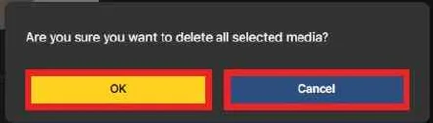

04
— 開始 —
Face Swap の開始
左側の縦メニューで顔の差し替えアイコンをクリックします。
— ステップ 01 —
顔の差し替えアイコンをクリック
左側の縦メニューで顔の差し替えアイコンをクリックします。そのメニューが Face Swap 機能です。

左側の縦メニューで顔の差し替えアイコンをクリックします。
左側の縦メニューで顔の差し替えアイコンをクリックします。そのメニューが Face Swap 機能です。
左側には設定とアップロードのエリア、右側には生成された結果が表示されます。
左側には設定とアップロードのエリアがあり、右側には生成された結果が表示されます。
最初は右側の結果エリアは空です。元画像と差し替え画像がそろうと Generate を実行します。

上部の Models で使用する画像生成モデルを選択します。
上部の Modelsで使用する画像生成モデルを選択します。
現在の画面では Nano Banana 2 と Nano Banana のオプションを確認できます。

Drop Image Here または Click to Upload で、顔を差し替える元画像をアップロードします。
Drop Image Here または Click to Uploadで、顔を差し替える元画像をアップロードします。
顔や頭の向き、ライティング、解像度が安定した写真ほど、結果が自然になります。
アップロードした画像は右上の X ボタンで削除し、選び直すことができます。

Brush Size スライダーでブラシのサイズを調整します。
広い領域は太いブラシで素早く塗ります。
目元やあごのラインなど、繊細な部分は細いブラシで整えます。

Swap to image エリアには、新しく適用する顔画像をアップロードします。
Swap to image エリアには、新しく適用する顔画像をアップロードします。
正面や 3/4 の角度のように顔の構造がよく見える画像を使うと、差し替え結果が安定します。

元画像・ブラシマスク・差し替える顔画像がすべてそろうと Generate ボタンが有効になります。
元画像・ブラシマスク・差し替える顔画像がすべてそろうと Generate ボタンが有効になります。
差し替える顔画像も右上の X ボタンで削除し、再度アップロードできます。

Generate を押すと確認ポップアップが表示されます。
Generateを押すと確認ポップアップが表示されます。
OKを押すと実際の生成が始まり、 Cancelを押すと前の画面に戻ります。

生成が終わると、右側の結果エリアに結果画像が表示されます。
生成が終わると、右側の結果エリアに結果画像が表示されます。
結果カードには生成結果、元画像で指定した顔の領域、差し替えに使った顔画像が一緒に表示され、比較しやすくなっています。

共有と削除は、誤操作を防ぐためにそれぞれ確認ポップアップを経ます。
外部リンクのアイコンを押すと、メディアを公開で共有するかどうかを尋ねるポップアップが表示されます。 OKは共有を進め、 Cancelは共有せずに閉じます。

ごみ箱アイコンを押すと、選択した結果メディアを削除するかどうかを確認します。削除が必要な場合にのみ OKを押し、保管すべき結果であれば Cancelを押します。
